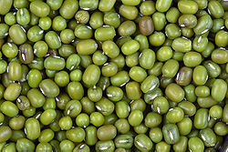

मुगडाळ विषयी माहिती

प्रस्तावना
खरीप हंगामामध्ये तुरीच्या खालोखाल मूग आणि उडीद ही महत्त्वाची पिके गणली जातात. उडीद ही ७० ते ७५ दिवसात येणारी
पिके असल्यामुळे थोड्याशा पावसाचा देखील लाभ उठवू शकतात. दुबार तसेच मिश्र पीक पध्दतीसाठी ही दोन्ही पिके अतिशय
महत्त्वाची आहेत.
जमीन
मूग आणि उडीदाला मध्यम ते भारी, चांगली निचरा होणारी जमीन आवश्यक असते. पाणी साचून राहणारी क्षारपड, चोपण किंवा
अत्यंत हलकी जमीन टाळावी.
पूर्वमशागत
उन्हाळ्यापूर्वी जमीन नांगरावी. ती चांगली तापू द्यावी आणि पावसाळा सुरु होताच कुळावच्या पाळ्या मारुन सपाट करावी.
धसकटे वेचून घ्यावीत. याच वेळी हेक्टरी ५ टन चांगले कुजलेले शेणखत घालावे.
पेरणीचा कालावधी
पिकांची पेरणी जूनच्या शेवटच्या ते जुलैच्या पहिल्या आठवड्यादरम्यान करावी पेरणीस उशीर झाल्यास उत्पादनात घट येते
मुगाच्या सुधारित जाती
१-कोपरगाव
कालावधी ६५ ते ७० दिवस, मर व करपा, पिवळा केवडा रोग प्रतिकारक्षम, उत्पादन ३-१० क्विं/हे
२- बीएम ४
कालावधी ६५ ते ६७ दिवस, करपा व भूरी रोगास प्रतिकारक, मध्य भारतासाठी शिफारस, उत्पादन ३ ते ११ क्विं/हे
३- बीपीएमआर १४५
कालावधी ६० ते ६५ दिवस, भुरी, करपा व पिवळा केवडा रोगास प्रतिकारक, उत्पादन ७ ते ८ क्विं/हे
४- बीएम २००२-१
कालावधी ६५-७० दिवस, भूरी रोगास प्रतिकारक, उत्पादन ७ ते ९ क्विं/हे, सर्वात जास्त प्रथिने (२३:९० टक्के)
५- बीएम २००३-२
कालावधी ६५ ते ७० दिवस, उत्पादन ८ ते १० क्विंटल/हे, शेंगा लांब असून मोठ्या आकाराचे, चमकदार दाणे
६- पी के व्ही एफे एम -४
कालावधी ७०-७५ दिवस, उत्पादन १० ते ११ क्विं/हे
७- पी.के.व्ही. ग्रीन गोल्ड
कालावधी ७०-७५ दिवस, उत्पादन १० ते ११ क्विं/हें. एकाच वेळी पक्वता येणारा वाण
८- वैभव
कालावधी ७० ते ७५ दिवस, भुरी रोगास प्रतिकारक, टपोरे हिरवे दाणे, उत्पादन १४-१५ क्विं/हे
बियाण्याचे प्रमाण व बीजप्रक्रिया
हेक्टरी १० ते १५ किलो बियाणे पुरेसे आहे पेरणीपूर्वी बियाण्यास प्रति किलो बाविस्टीन १ ग्रॅम किंवा थायरम २ ग्रॅम
चोळावे. तसेच ट्रायकोडर्मा ४ ग्रॅम किलो बियाण्यास बीजप्रक्रिया केल्यास बुरशीजन्य रोगापासून पिकांचे नुकसान होत
नाही. त्याचबरोबर १० किलो बियाण्यास जिवाणु संवर्धक रायझोबियम व पीएसबी प्रति २५० ग्रॅम लावून पेरणी करावी.
पेरणीचे अंतर
– ४५ X १० सेमी
खतांची मात्रा –
जमिनीची मशागत करताना जमिनीत शेणखत व्यवस्थित पसरावे. पेरणीच्या वेळी २५ किलो नत्र व ५० किलो स्फुरद प्रति हेक्टरी
द्यावे.
आंतरमशागत –
पेरणीनंतर सुरुवातीच्या एक महिन्यात तण नियंत्रणासाठी एक खुरपणी व दोन कोळपण्या कराव्यात.
आंतरपीक पद्धतीचा वापर – या पिकांच्या कालावधीमुळे ही दोन्ही पिके तूर, ज्वारी, कपाशीत आंतरपीक म्हणून घेता येतात.
रोग-कीड नियंत्रण
भूरी –
मूग पिकावर विशेषत: भूरी रोगाचा प्रादुर्भाव होतो. भूरी रोग फुलांच्या पुर्वी अथवा पीक फुलो-यात असताना आल्यास जास्त
प्रमाणात होते. नियंत्रणासाठी सल्फेक्स ०.३० % किंवा २०-२२ ग्रॅम पाण्यात विरघळणारे गंधक १० लिटर पाण्यात मिसळून
फवारावे. तसेच ३० पोताची गंधकाची भुकटी २० किलो हेक्टरी धुरळणी करावी.
शेंगा पोखरणारी अळी –
या अळीचा बंदोबस्त करण्यासाठी किनॉलफॉस ३५ ईसी ०.०७% , २० मिली १० लिटर पाण्यात मिसळून कीडनाशकाची फवारणी करावी.
पीक काढणी –
पिकांच्या बहुतांश शेंगा पक्व झाल्यास पावसाचा अंदाज पाहून काढणी त्वरीत करुन तोडणी केलेल्या शेंगा व्यवस्थित
पसराव्यात. तोडणी केलेल्या शेंगा उन्हात वाळवून काठीने बडवून किंवा ट्रॅक्टरने मळणी करुन खेळत्या हवेच्या वातावरणात
साठवाव्यात उत्पादन १०-१२ क्विंटल/हेक्टर